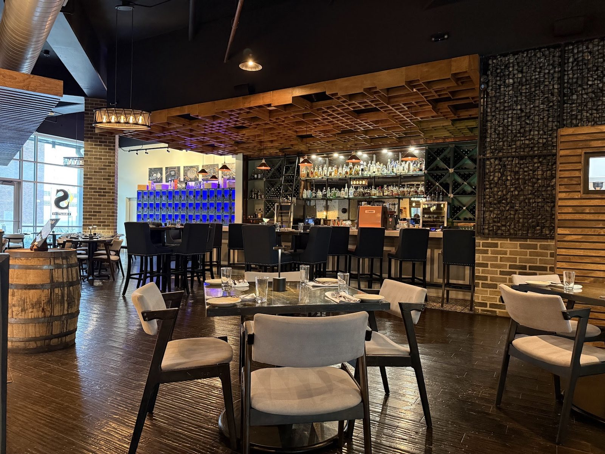

Steaks & plates
Steaks cooked right, and a fresh redfish plate that is not overly salty.
Restaurant & bar · San Antonio, TX

Hours Mon · 5–10 PMTue · 5–10 PMWed · 5–10 PMThu · 5–10 PMFri · 5–11 PMSat · 5–11 PMSun · Closed
227 4th St, Suites 101-103, 207 4th St, San Antonio, TX 78205
Redfish risotto, steaks and handcrafted cocktails in a dark wood room.
On the menu
Plates, pours and sweets.
Steaks cooked right, and a fresh redfish plate that is not overly salty.

A full bar. Ask for something off the list and we will make it.

Mousse cake, peach cheesecake and raspberry gelato.


4.9 ★ · 4424 Google reviews
Visited from out of town on 5/21/26. We truly enjoyed our visit and would definitely come back. The service, food, and atmosphere were all excellent. Our server took the time to explain the menu and answer all of our questions. The steak tasted amazing and was cooked to perfection. The sides were great, and we also loved the drinks, bread, and desserts especially the mousse cake and peach cheesecake.
We had such a wonderful experience at Stout’s celebrating my husband’s birthday! The redfish risotto was absolutely delicious definitely the highlight of the meal we wanted to come back for it again but didn’t have time this trip. The meatballs were also very good. I wasn’t personally a fan of the meat lovers pizza, but my husband loved it!
We stumbled upon this place on accident! This place was amazing! We had the best time. They made me a special drink because there wasn’t one on the menu that I wanted. Lewis was an excellent host at the bar. Everything was phenomenal. The burger was amazing and the sourdough bun was to die for.l The pizza was almost like Italy! And we topped off the night with some raspberry gelato that made our hearts sing.

Our story
Upscale plates, from filets to risottos, backed by a full bar of handcrafted cocktails. Open evenings, in dark wood, stone and pendant light.
Attentive servers who walk you through the menu. A bar that will make something off the list.
Visit
227 4th St, Suites 101-103, 207 4th St, San Antonio, TX 78205
Open 5 PM Monday to Saturday. Closed Sunday.